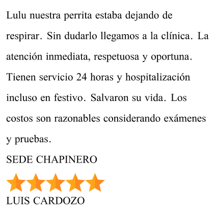
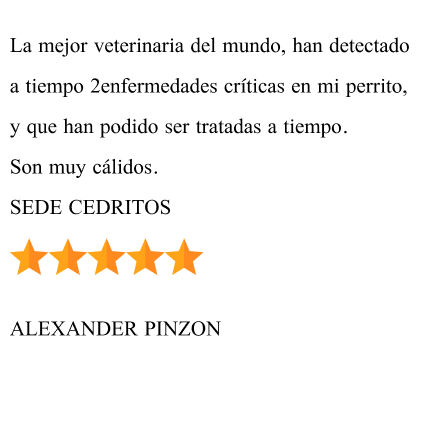
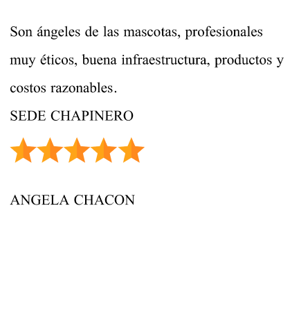
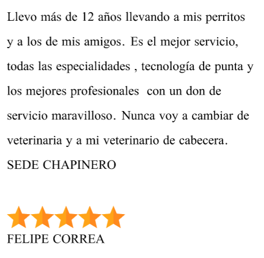

- 
- 
- 
- 
Hace años, en el corazón de nuestra comunidad, surgió un sueño compartido por un grupo de apasionados amantes de los animales. La semilla de lo que se convertiría en nuestra clínica veterinaria fue plantada por la visión de un mundo donde cada mascota recibiera el cuidado compasivo y experto que merece. La idea nació de la experiencia personal de aquellos cuyos corazones estaban ligados a las patitas y hocicos de sus fieles compañeros. Después de enfrentar desafíos en la búsqueda de atención veterinaria de calidad para sus propias mascotas, se dieron cuenta de la necesidad de crear un refugio seguro y confiable para los animales de la comunidad. Hoy, miramos hacia atrás con orgullo al camino que hemos recorrido, pero también miramos hacia adelante con esperanza y determinación. Seguimos comprometidos con nuestra misión de promover la salud y el bienestar de todas las criaturas peludas, emplumadas y escamosas que llegan a nuestras puertas, porque sabemos que juntos podemos crear un mundo donde cada animal reciba el amor y cuidado que se merece
En la clínica nuestros clientes son la prioridad, por eso estamos en contacto con ellos para estar al tanto de los
procesos realizados posteriormente por nuestros profesionales.
línea de atención: (+57) 311 3208760
(+57) 311 3208760
servicioalcliente@petcare.com.co